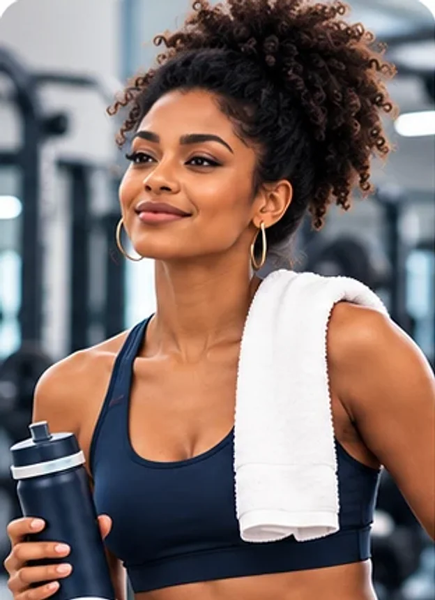
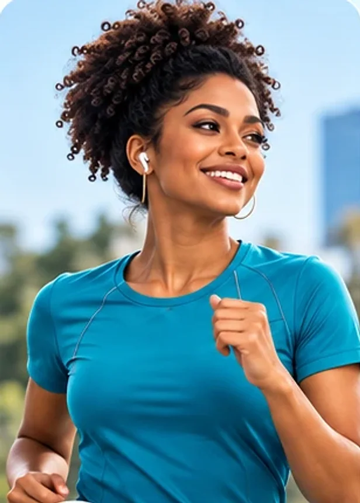
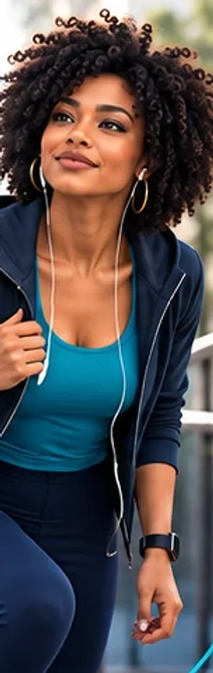

Personagem da marca
em construção
Uma nova integrante
Tem alguém novo chegando à UORT.
E antes de apresentá-la, queremos ouvir quem conhece a UORT por dentro.
- Ela não atende consultas.
- Não faz diagnósticos.
- Não substitui nenhum especialista.
- Mas vai conversar muito com quem procura a UORT.


Personagem da UORT
Quem é a Maia?
Uma personagem digital adulta, com presença real, contemporânea e próxima.
- Identidade
- Mulher negra, brasileira, de Salvador
- Idade
- Adulta, entre 30 e 35 anos
- Corpo
- Esguio, postura natural e confiante
- Cabelo
- Crespo natural, com vários penteados possíveis
- Estilo
- Urbano, casual e esportivo
- Paleta
- Conectada às cores da UORT
Regra de consistência: em qualquer imagem, a mesma mulher.
Pode mudar
penteado · roupa · contexto · expressão · posição
Não muda
traços do rosto · idade aparente · tom de pele · estrutura corporal · identidade
Maia no dia a dia
Maia em situações reais
Mesma pessoa, contextos diferentes. É assim que ela se aproxima da rotina de quem procura a UORT.





Escolha 07 de 09 · Canais
Onde você gostaria de encontrar a Maia primeiro?
Escolha até duas opções.
Ela poderá viver em todos esses ambientes. Essa escolha nos ajuda a entender por onde começar.
Obrigado por participar
Agora a Maia também tem um pouco da UORT de cada um de vocês.
A estratégia e os limites da personagem são responsabilidade da comunicação.
Mas quem vive a UORT todos os dias também pode ajudar a definir como essa nova integrante deve se relacionar com as pessoas.
MAIA
- Movimento.
- Acolhimento.
- Informação.
- Acesso.
Movimento em todas as fases da vida.